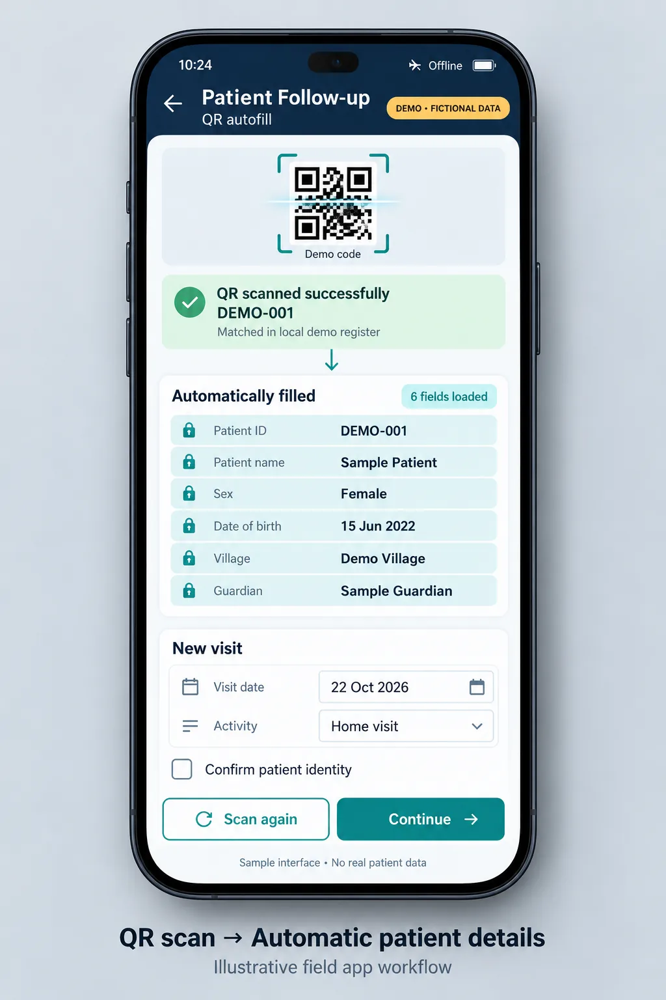

Survey123 forms and field tools
Forms and small tools that field and facility staff can use without a training manual, and that produce data a dashboard can trust.
- Survey123
- XLSForm
- QR codes
- Excel
- HTML

The challenge
Field teams record information in difficult conditions: weak signal, busy clinics and long days. Every typed name, retyped ID or unchecked number becomes a cleaning job later. The goal was simple tools that make the right entry the easy entry.
1. Hospitalisation notification form
A Survey123 form for staff hospitalisation notices with cascading lookups. Choosing an employee limits the next list to that employee's dependants, so a notice can never be filed against the wrong family.
2. Malaria campaign registration and field visits
A registration and field visit form where scanning a QR code fills in the patient's details. Staff scan instead of retyping, which removes typing errors and speeds up every visit.
- 1Register once
- 2Print or issue QR code
- 3Scan at each visit
- 4Details filled in
- 5Record the visit

3. Offline stock dashboard
A private dashboard that works offline on Survey123 CSV exports. It reports by day and by location and calculates stock as opening balance plus restock minus use, with Excel and PDF export for reports.

4. Campaign inventory tracker
For a three-month mobile health campaign visiting four locations in rotation, one per week, I built an Excel tracker with a dashboard, a central store ledger and weekly log tabs. It records the stock taken on each trip, what was used and what came back, and keeps a running balance at the central store.
What ties them together
- Choices and lookups instead of free text
- Rules that catch mistakes at the point of entry
- Tools that keep working when the signal does not
- Outputs that drop straight into reports
All design mockups
Sample data These screens show the design using invented, anonymised data. Real programme data stays with RHCI.